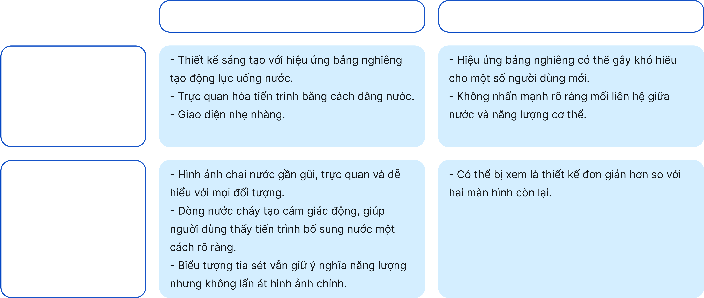
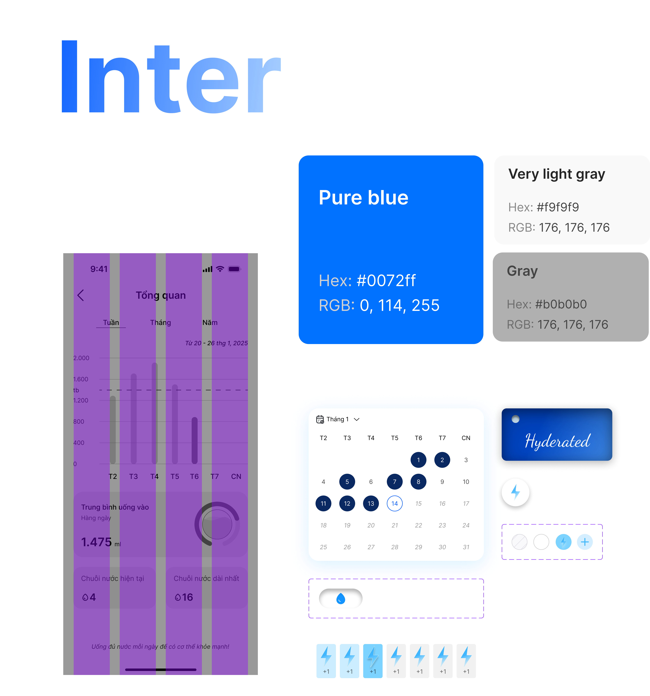
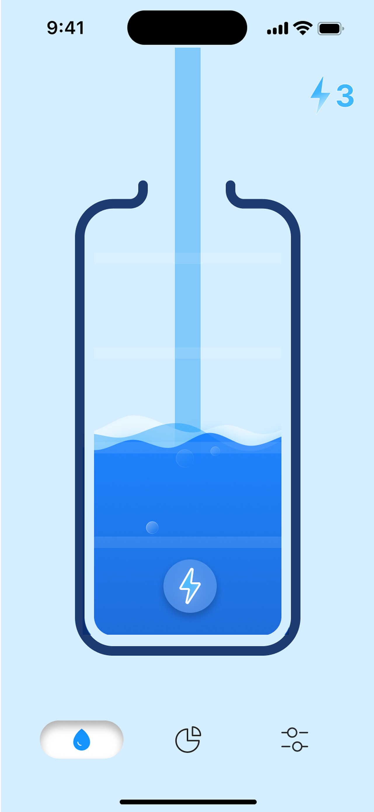
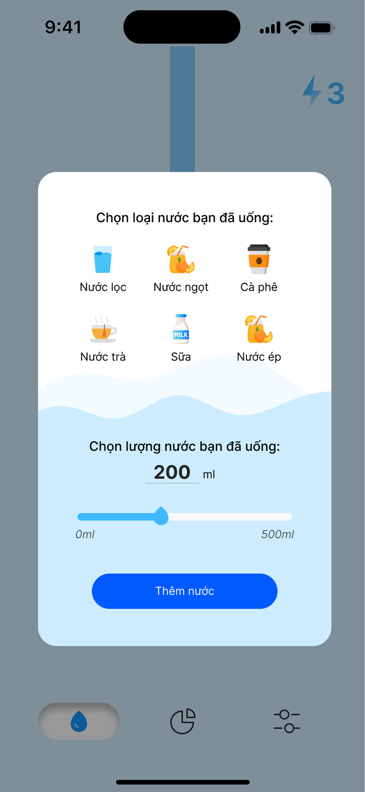
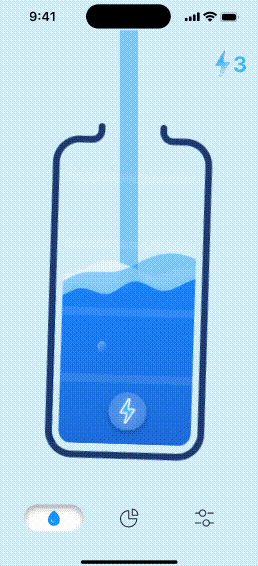
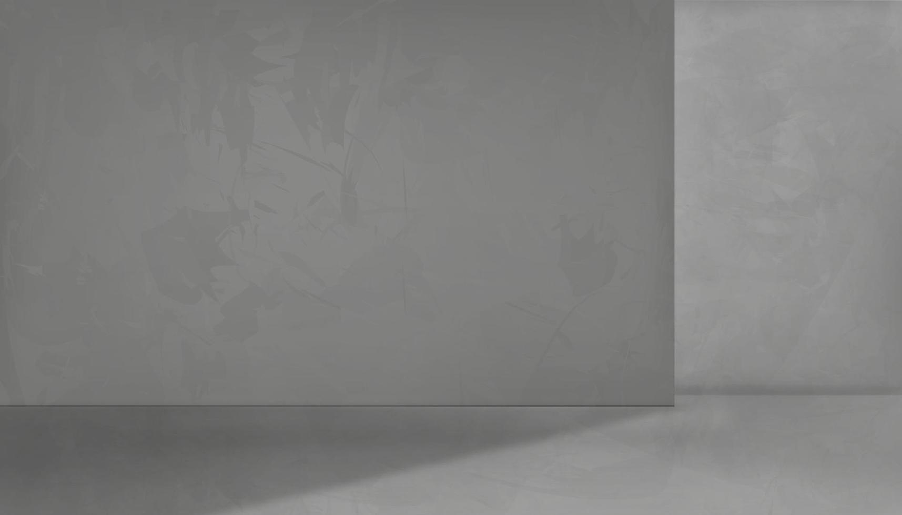
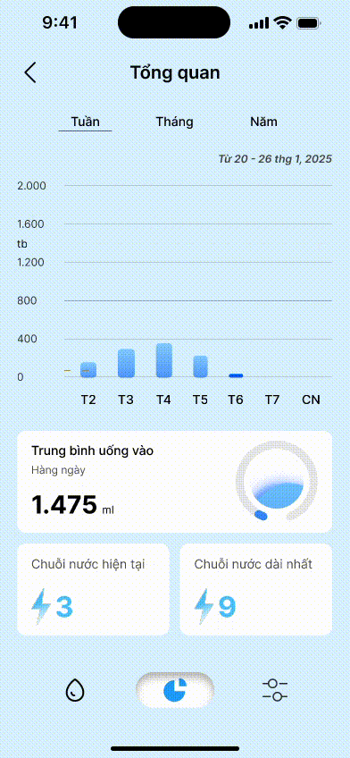

WATER TRACKER
Thiết kế UI cho nhu cầu cá nhân
Case Study thực tế trình bày quy trình thiết kế giao diện người dùng
cho ứng dụng Nhắc nhở uống nước - một ứng dụng di động đơn giản giúp
người dùng quan tâm đến sức khỏe của bản thân.
Tổng quan
Trong thế giới công nghệ hiện đại, nơi các ứng dụng phục vụ mọi nhu
cầu cá nhân, xã hội và công việc, luôn có một vị trí đặc biệt dành cho
những ứng dụng giúp chúng ta duy trì thói quen lành mạnh mỗi ngày. Từ
lịch trình tập luyện, theo dõi giấc ngủ, nhắc nhở uống thuốc đến các
ứng dụng hỗ trợ dinh dưỡng, tất cả những công cụ này đều góp phần nâng
cao sức khỏe và chất lượng cuộc sống của người dùng.
Một trong những thói quen quan trọng nhưng thường bị lãng quên là uống
đủ nước. Giữa lịch trình bận rộn, nhiều người không nhận ra rằng cơ
thể mình đang thiếu nước, dẫn đến mệt mỏi, mất tập trung và ảnh hưởng
đến sức khỏe tổng thể. Đó chính là lý do tại sao các ứng dụng nhắc nhở
uống nước ra đời – nhằm giúp người dùng duy trì lượng nước cần thiết
một cách dễ dàng và hiệu quả.
Quá trình thiết kế
Bạn đã bao giờ quên uống nước đủ trong ngày chưa? Cuộc sống bận rộn
với hàng trăm nhiệm vụ khiến chúng ta dễ dàng bỏ quên những điều cơ
bản, như duy trì lượng nước cần thiết cho cơ thể. Tuy nhiên, việc
không uống đủ nước có thể ảnh hưởng nghiêm trọng đến sức khỏe, từ mất
nước nhẹ đến giảm hiệu suất làm việc, thậm chí gây ra các vấn đề
nghiêm trọng hơn nếu tình trạng này kéo dài.
Ứng dụng theo dõi việc uống nước được thiết kế với mục đích giúp người
dùng hình thành và duy trì thói quen uống nước một cách khoa học.
Trước hết, ứng dụng phải nhắc nhở người dùng uống nước đúng thời điểm,
đồng thời cung cấp dữ liệu và thống kê giúp họ theo dõi lượng nước
tiêu thụ hàng ngày, từ đó cải thiện sức khỏe tổng thể.
Đối với designer, một giao diện người dùng chất lượng cao cần đáp ứng
bốn yếu tố quan trọng:
- Khả năng sử dụng: Ứng dụng phải đơn giản, dễ hiểu và thuận tiện để sử dụng hàng ngày.
- Tiện ích: Ứng dụng cần cung cấp thông tin hữu ích và thực sự giúp người dùng giải quyết vấn đề.
- Khả năng truy cập: Thiết kế phải phù hợp với nhiều đối tượng người dùng, từ người trẻ đến người cao tuổi.
- Mong muốn: Ứng dụng không chỉ giúp theo dõi việc uống nước mà còn tạo ra trải nghiệm hấp dẫn, giữ chân người dùng và khuyến khích họ duy trì thói quen lành mạnh.
Dựa trên những yếu tố này, việc đặt mục tiêu không chỉ tạo ra một ứng
dụng giúp người dùng uống nước đầy đủ mà còn cung cấp thông tin hữu
ích để nâng cao giá trị sử dụng. Đồng thời, giao diện ứng dụng cũng
được đầu tư về mặt thẩm mỹ: vì đây là ứng dụng sử dụng hàng ngày, tại
sao không thêm vào một chút tinh tế và hấp dẫn để nâng cao trải nghiệm
người dùng?
Dựa trên những yếu tố này, việc đặt mục tiêu không chỉ tạo ra một ứng
dụng giúp người dùng uống nước đầy đủ mà còn cung cấp thông tin hữu
ích để nâng cao giá trị sử dụng. Đồng thời, giao diện ứng dụng cũng
được đầu tư về mặt thẩm mỹ: vì đây là ứng dụng sử dụng hàng ngày, tại
sao không thêm vào một chút tinh tế và hấp dẫn để nâng cao trải nghiệm
người dùng?
Các chức năng cơ bản được cân nhắc đưa vào thiết kế ứng dụng này bao
gồm:
- Thêm mục tiêu uống nước cá nhân theo thể trạng và hoạt động hàng ngày.
- Nhắc nhở và thông báo uống nước đúng thời điểm.
- Theo dõi lượng nước đã uống và đưa ra gợi ý điều chỉnh phù hợp.
- Xem báo cáo, thống kê về lượng nước tiêu thụ và đặt mục tiêu theo tuần/tháng.
Màn hình trang chủ
Hãy cũng xem qua 2 ý tưởng UI cho Trang chủ của ứng dụng:
Màn hình thứ nhất
Mục tiêu của ứng dụng là tạo giao diện mang tính thu hút người dùng. Ý
tưởng ban đầu, phần tử chính trong màn hình sẽ là tấm bảng Hyderated.
Điều đặc biệt là tấm bảng bị nghiêng khi nước uống trong ngày chưa đạt
mục tiêu. Khi mục tiêu uống nước hàng ngày hoàn thành, tấm bảng sẽ ở
vị trí được canh ngang như bình thường.
Trước hết, sự nghiêng lệch của bảng khi nước chưa chạm tới tượng trưng
cho trạng thái không cân bằng của cơ thể khi chưa được cung cấp đủ
nước. Nó gợi lên cảm giác bất ổn, cho thấy rằng người dùng vẫn cần bổ
sung thêm nước để đạt trạng thái hydrat hóa tối ưu. Khi nước dâng lên
và chạm bảng, bảng dần trở về đúng vị trí, thể hiện sự cân bằng được
khôi phục, cũng như cơ thể khi được cấp đủ nước sẽ hoạt động tốt hơn.
Bên cạnh đó, hiệu ứng này còn đóng vai trò như một yếu tố khuyến khích
người dùng tiếp tục uống nước. Khi nhìn thấy bảng nghiêng, họ sẽ có xu
hướng muốn đưa nó về vị trí ổn định bằng cách uống thêm nước. Đây là
cách thiết kế trực quan hóa tiến trình theo dõi, giúp người dùng cảm
nhận được sự thay đổi thay vì chỉ dựa vào các con số thống kê khô
khan.
Ngoài việc tạo động lực, chi tiết này còn mang lại cảm giác thành tựu
khi người dùng hoàn thành mục tiêu. Khi bảng trở về vị trí ngay ngắn,
nó tạo ra một phản hồi tích cực, giúp người dùng nhận biết ngay lập
tức rằng họ đã đạt được một cột mốc quan trọng trong ngày. Phản hồi
trực quan này giúp nâng cao trải nghiệm sử dụng ứng dụng, khiến quá
trình theo dõi uống nước trở nên thú vị và tương tác hơn.
Màn hình thứ hai
Màn hình thứ ba sử dụng hình ảnh một chai nước đang được rót đầy để
biểu thị quá trình hydrat hóa của cơ thể. Hình ảnh này tạo ra sự liên
tưởng trực tiếp và dễ hiểu: cơ thể con người giống như một chiếc bình
chứa, cần được bổ sung nước đều đặn để duy trì hoạt động tối ưu.
Dòng nước chảy vào chai tượng trưng cho quá trình nạp nước, nhấn mạnh
rằng việc uống nước là một hành động liên tục và cần thiết. Khi mức
nước trong chai tăng lên, nó tạo ra cảm giác tiến trình đang diễn ra,
giúp người dùng dễ dàng nhận biết trạng thái hydrat hóa của mình theo
cách trực quan nhất. Đây là một cách thể hiện tự nhiên và gần gũi,
giúp người dùng hình dung rằng mỗi lần uống nước là một bước tiến nhỏ
trong việc chăm sóc sức khỏe.
Bên cạnh đó, biểu tượng tia sét xuất hiện bên trong chai củng cố thêm
ý nghĩa rằng nước không chỉ giúp duy trì sự sống mà còn đóng vai trò
quan trọng trong việc cung cấp năng lượng. Điều này gợi ý rằng uống
nước không chỉ để giải khát mà còn giúp cơ thể hoạt động hiệu quả hơn,
duy trì sự tỉnh táo và sức bền trong suốt cả ngày.
Tổng thể, màn hình thứ ba mang lại cảm giác nhẹ nhàng, trực quan và tự
nhiên, giúp việc theo dõi lượng nước trở thành một trải nghiệm gần gũi
và dễ tiếp cận. Nó nhấn mạnh tầm quan trọng của việc bổ sung nước một
cách đều đặn, biến một thói quen hàng ngày thành một hành động có ý
thức, giúp người dùng duy trì sức khỏe tốt hơn một cách bền vững.
So sánh 2 màn hình

Lựa chọn phong cách theo màn hình số 2 là lựa chọn hợp lý cho ứng dụng
này.
Style Guide

Màn hình nhập lượng nước uống
Thiết kế tối giản và trực quan giúp người dùng nhanh chóng hiểu được
cách thao tác mà không cần hướng dẫn. Màu sắc chủ đạo là xanh dương kết
hợp với trắng tạo cảm giác tươi mát, nhẹ nhàng, phù hợp với chủ đề sức
khỏe và theo dõi lượng nước uống.



Các biểu tượng minh họa cho từng loại nước giúp người dùng dễ dàng phân
biệt và chọn lựa một cách nhanh chóng. Cách bố trí theo dạng lưới ba cột
giúp tiết kiệm không gian và tối ưu hóa việc hiển thị thông tin trên màn
hình. Thanh trượt cho phép người dùng chọn lượng nước một cách trực quan
mà không cần nhập số liệu thủ công, đồng thời hiển thị con số rõ ràng để
tránh nhầm lẫn.
Nút "Thêm nước" cũng được thiết kế nổi bật với màu xanh dương, tạo điểm
nhấn rõ ràng và giúp người dùng dễ dàng xác nhận hành động.
Chuỗi nước
Chuỗi nước trong ứng dụng hoạt động như một hệ thống khuyến khích liên
tục, giúp người dùng duy trì thói quen uống nước đầy đủ mỗi ngày. Khi
hoàn thành mục tiêu nước uống trong một ngày, người dùng sẽ nhận được
một chuỗi nước, đánh dấu rằng họ đã thực hiện tốt nhiệm vụ. Nếu họ
tiếp tục đạt mục tiêu vào những ngày tiếp theo, chuỗi này sẽ kéo dài,
tạo ra cảm giác thành tựu và thúc đẩy việc duy trì thói quen đều đặn.
Cơ chế này tận dụng hiệu ứng tâm lý "tránh mất mát" để tạo động lực,
bởi vì nếu người dùng bỏ lỡ một ngày không uống đủ nước, chuỗi sẽ bị
mất và phải bắt đầu lại từ đầu. Điều này khiến họ có xu hướng kiên trì
hơn để bảo vệ thành quả đã xây dựng. Cảm giác đạt được một chuỗi dài
cũng giúp củng cố tinh thần tự giác, biến việc uống nước từ một hành
động đơn lẻ thành một phần của thói quen hàng ngày.
Ý tưởng về chuỗi nước trong ứng dụng được áp dụng từ cơ chế “streak”
phổ biến trong các ứng dụng hướng đến việc xây dựng thói quen và duy
trì động lực. Mô hình này xuất phát từ lĩnh vực tâm lý học hành vi,
đặc biệt là các nguyên tắc về tích lũy phần thưởng và tránh mất mát.
Một trong những ví dụ điển hình của cơ chế này là Duolingo, ứng dụng
học ngoại ngữ, nơi người dùng duy trì “chuỗi ngày học liên tiếp” để
tạo cảm giác thành tựu. Khi chuỗi càng dài, người dùng càng cảm thấy
gắn bó với quá trình học và có động lực để tiếp tục. Điều này cũng
xuất hiện trong nhiều ứng dụng thể dục như Apple Fitness hay Strava,
nơi người dùng phải duy trì các hoạt động thể chất hàng ngày để không
bị mất chuỗi.
Ngoài các ứng dụng hiện đại, ý tưởng này cũng có nguồn gốc từ các cơ
chế động lực truyền thống, chẳng hạn như lịch đánh dấu thói quen. Việc
đánh dấu vào một lịch mỗi ngày hoàn thành nhiệm vụ giúp người dùng
thấy rõ tiến trình của mình và cảm thấy có trách nhiệm hơn với mục
tiêu đã đặt ra.
Trong trường hợp của ứng dụng theo dõi nước, cơ chế chuỗi nước được áp
dụng để biến hành động uống nước – vốn đơn giản nhưng dễ bị lãng quên
– thành một thói quen có ý nghĩa. Nhờ đó, người dùng cảm thấy có động
lực duy trì đều đặn, tránh gián đoạn và từng bước hình thành một lối
sống lành mạnh hơn.
Dashboard
Trang tổng quan của ứng dụng theo dõi uống nước được thiết kế trực
quan, giúp người dùng dễ dàng theo dõi thói quen uống nước của mình
theo từng ngày, tuần, tháng hoặc năm. Biểu đồ cột hiển thị lượng nước
uống vào mỗi ngày trong tuần, với các cột có chiều cao khác nhau phản
ánh sự biến động trong mức tiêu thụ. Một đường chấm ngang được sử dụng
để đánh dấu mức trung bình, từ đó người dùng có thể so sánh và đánh
giá xem liệu họ đã đạt được lượng nước cần thiết hay chưa. Cách thể
hiện này không chỉ giúp nhận diện nhanh ngày nào uống ít hoặc nhiều mà
còn tạo ra động lực để duy trì thói quen lành mạnh.
Ngay bên dưới biểu đồ, ứng dụng cung cấp thông tin về mức tiêu thụ
trung bình hàng ngày, giúp người dùng có một con số cụ thể để hình
dung về thói quen của mình. Bên cạnh con số 1.475 ml, một vòng tròn
trực quan được sử dụng để biểu thị tiến độ, giúp người dùng dễ dàng
nắm bắt thông tin mà không cần phân tích số liệu phức tạp.


Ngoài việc hiển thị dữ liệu, ứng dụng còn sử dụng hệ thống “chuỗi
nước” nhằm khuyến khích người dùng duy trì thói quen tốt. Chuỗi nước
hiện tại cho biết người dùng đã liên tục đạt mục tiêu trong bao nhiêu
ngày, trong khi chuỗi dài nhất ghi nhận kỷ lục cao nhất mà họ từng duy
trì được. Đây là một yếu tố tâm lý quan trọng, vì việc theo dõi streak
sẽ tạo động lực mạnh mẽ, giúp người dùng duy trì sự nhất quán trong
việc uống nước.
Thiết kế của ứng dụng cũng có một số tiện ích khác, như thanh chuyển
đổi chế độ với biểu tượng giọt nước và biểu đồ, giúp người dùng có thể
tùy chỉnh cách hiển thị dữ liệu theo sở thích cá nhân. Giao diện tông
màu xanh nhẹ nhàng tạo cảm giác thư giãn, gần gũi với hình ảnh của
nước, giúp trải nghiệm sử dụng trở nên dễ chịu hơn.
Nhìn chung, thiết kế này có nhiều ưu điểm đáng kể. Biểu đồ cột giúp
người dùng dễ dàng nắm bắt xu hướng tiêu thụ nước, con số trung bình
và vòng tròn tiến độ làm cho thông tin trở nên trực quan hơn, trong
khi hệ thống chuỗi uống nước đóng vai trò như một cơ chế thúc đẩy hành
vi tích cực. Sự kết hợp của các yếu tố này giúp ứng dụng không chỉ
đóng vai trò theo dõi mà còn trở thành một công cụ hỗ trợ cải thiện
thói quen uống nước một cách hiệu quả.
Other case studies
If you are interested to see more practical case studies with creative
flows for UI/UX design, here is the set of them.

PSYCALL
For connecting users with professional psychologists through
seamless appointment scheduling.

e-Tour
For simplifying travel planning and booking, allowing users to
explore destinations, customize itineraries, and book tours
seamlessly.
Let's
Get in touch
I’m always excited to connect and collaborate! Whether you have a
project idea, feedback on my work, or an opportunity to discuss, feel
free to reach out.
(+84) 397 617 144
hoaingoc.creative@gmail.com
Henry
2025